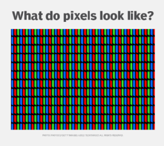
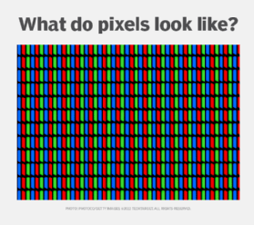

Wat zijn kleurmodellen?
Een kleurmodel is eigenlijk een speciale taal die ons vertelt hoe we kleuren kunnen maken door basiscomponenten te mengen. Kunstenaars, ontwerpers en computers gebruiken kleurmodellen om met kleuren te werken. Ze maken het makkelijker om precies te zeggen welke kleur je bedoelt, net zoals woorden in een taal je helpen om te communiceren.
RGB kleurmodel
RGB staat voor Rood, Groen en Blauw. Het is een additief kleurmodel, wat betekent dat verschillende kleuren worden gecreëerd door licht toe te voegen. RGB wordt veel in digitale schermen en fotografie gebruikt.
Hoe werkt het?
Door de kleuren rood, groen en blauw in verschillende verhoudingen te combineren, kunnen we een breed scala van kleuren maken. Bijvoorbeeld, gelijke hoeveelheden rood, groen en blauw licht maken wit, terwijl de afwezigheid van alle kleuren zwart creëert.
Pixelniveau: Digitale schermen, zoals je computermonitor of smartphone, bestaan uit miljoenen kleine lichtgevende punten, pixels genoemd. Elke pixel kan een andere kleur weergeven op basis van de intensiteit van de drie kleuren rood, groen en blauw.
Kleurcodering: Kleuren in het RGB-model worden vaak gecodeerd als drie getallen tussen 0 en 255 (bijvoorbeeld, R=255, G=0, B=0 voor rood). Dit geeft aan hoeveel van elke kleur er in een bepaalde kleur zit.
CMYK kleurmodel
CMYK staat voor Cyaan, Magenta, Geel en Zwart (Key). Het is een subtractief kleurmodel, wat betekent dat kleur wordt gecreëerd door pigmenten te verwijderen uit wit licht. Dit model wordt vooral gebruikt in drukwerk.
Hoe werkt het?
Cyaan, magenta, geel en zwart worden in dit model gemaakt door pigmenten toe te voegen en te mengen. Cyaan absorbeert rood, magenta absorbeert groen, en geel absorbeert blauw. Door deze drie kleuren te combineren, kunnen we verschillende kleuren bereiken. Zwart wordt toegevoegd om diepte en schaduw te creëren.
Drukwerk: In drukwerk worden kleuren gemaakt door inkt op papier aan te brengen. Printers gebruiken cyaan, magenta, geel en zwarte inkten om een breed scala van kleuren te produceren. Elk afgedrukt item is opgebouwd uit kleine punten, net als pixels op een scherm, maar hier worden kleuren gemaakt door inktpunten te combineren.
Meer weten over kleurmodellen?
Pixels en resolutie
Pixels
Pixels, afgeleid van de woorden "picture element," zijn de kleinste individuele punten waaruit een digitale afbeelding is samengesteld.
Ze vormen de basis van zowel digitale afbeeldingen als de weergave van visuele informatie op beeldschermen, of het nu gaat om computerschermen, smartphones, televisies of andere digitale displays.
Resolutie
In de digitale wereld betekent resolutie meestal hoeveel kleine puntjes (pixels) er op een scherm of in een afbeelding zitten.
Als een scherm een hoge resolutie heeft, betekent dit dat er veel kleine pixels zijn die samen een gedetailleerde afbeelding vormen. Maar als het een lage resolutie heeft, zijn er minder pixels, en de afbeelding ziet er minder scherp uit.
Bij foto's en video's is een hogere resolutie meestal beter omdat je meer details kunt zien. Maar het betekent ook dat de bestanden groter kunnen zijn. Dus, resolutie is eigenlijk hoe scherp en gedetailleerd een beeld is.
Meer leren over pixels en resolutie?